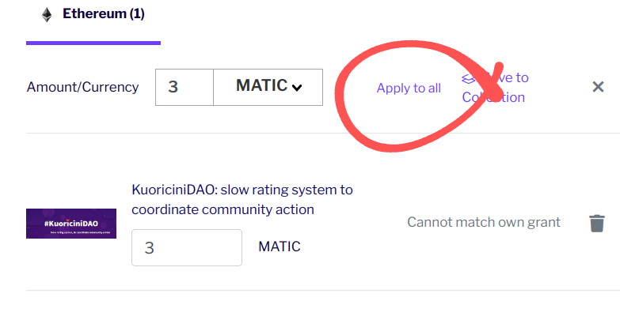
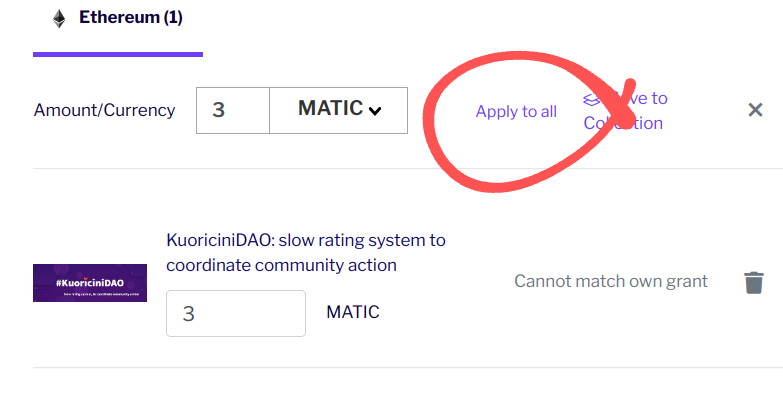

1. Vai su Gitcoin e crea un account Github
Vai su gitcoin.co e registrati su Github se non hai gia' un account


Fino al 23 Giugno, puoi supportare KuoricinaDAO su Gitcoin!
Gitcoin Quadratic Funding premia di piu' i progetti con tanti piccoli contributi.
100 persone che donano UN dollaro contano di piu' che una persona che ne dona 100!
Ed e' piu facile di quanto sembra!
Scegli la valuta. Puoi usare la valuta che hai gia' nel tuo wallet.
Quella di default DAI, 1 DAI vakle 1 dollaro. Se stai usando gia' KuoriciniDAO allora stai usando MATIC, puoi mettere 3 MATIC.
Contattaci su [Discord] o [Telegram] possiamo aiutarti a caricare il tuo wallet!
 


Connetti il tuo Metamask e conferma il pagamento!
Grazie per il tuo contributo e diffondi il verbo!
Per evitare pagamenti doppi dallo stesso profilo, Gitcoin premia i profili con un alto Trust.
Per alzare il valore del tuo contributo, per favore considera di alzare il tuo livello di Trust entrando nel tuo profilo e connettendoti a href="https://passport.gitcoin.co/">Gitcoin Passport.